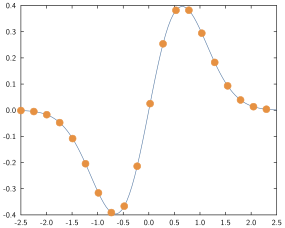
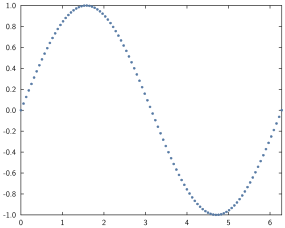

Line and Scatter plots
Syntax
The relevant commands here are
plotandplot!(2D lines connecting points, no markers by default)scatter,scatter!(markers showing a set of points, no line by default)
The general syntax is:
plot(data_to_plot...; options...)A command with an exclamation mark will add the corresponding plot to the current active axes while a command without will erase any existing plot on the current active axes and then display the plot.
For instance:
x = range(-2.5, stop=2.5, length=100)
y = @. exp(-x^2) * sin(x)
plot(x, y)
mask = 1:5:100
scatter!(x[mask], y[mask])overlays a scatterplot to a line plot:

Data formats
The table below summarises the different ways you can specify what data to plot, they are discussed in more details and with examples further on.
| Form | Example | Comment |
|---|---|---|
| single vector $x$ | plot(randn(5)) | pairs $(i, x_i)$ |
| two vectors $x,y$ | plot(randn(5),randn(5)) | pairs $(x_i,y_i)$ |
| multiple vectors $x,y,z$ | plot(randn(5),randn(5),randn(5)) | pairs $(x_i,y_i)$, $(x_i,z_i)$, ... |
| single matrix $X$ | plot(randn(5,2)) | pairs $(i, x_{i1})$, $(i, x_{i2})$, ... |
| one vector then vectors or matrices | plot(1:5, randn(5,2), randn(5)) | pairs between the first vector and subsequent columns |
| function $f$ from to | plot(sin, 0, pi) | draws points $x_i$ on the interval and plots pairs $(x_i, f(x_i))$ |
Examples
- Single vector $x$: the plot will correspond to the pairs $(i, x_i)$.
For instance:
plot(randn(5))
Two vectors $x$, $y$: the plot will correspond to the pairs $(x_i, y_i)$ (see e.g. the example in the previous section)
Multiple vectors $x$, $y$, $z$: this will create multiple plots corresponding to the pairs $(x_i, y_i)$, $(x_i, z_i)$ etc.
For instance:
x = range(0, stop=1, length=100)
plot(x, x.^2, x.^3, x.^4)- Single matrix $X$: the plots will correspond to the pairs $(i, X_{i1})$, $(i, X_{i2})$ etc.
For instance:
plot(randn(10, 3))
- vector and matrices or vector $x$, $Y$, $Z$: will form plots corresponding to the pairs of $x$ and each column in $Y$, $Z$ etc.
For instance:
x = range(0, stop=1, length=25)
y = @. sin(x)
z = @. cos(x)
t = y .+ z
scatter(x, hcat(y, z), t)
- function: will draw points on the specified range and draw $(x_i, f(x_i))$.
For instance:
scatter(sin, 0, 2π; msize=0.1)
xlim(0,2π)
Styling options
Line and scatter plots have effectively two things they can get styled:
- the line styles
- the marker styles
Note the plural, so that if you are plotting multiple lines at once, each keyword accepts a vector of elements to style the individual plots. If a styling option is specified with a single value but multiple lines are being plotted, all will have that same value for the relevant option.
For instance:
plot(randn(10, 3), colors=["violet", "navyblue", "orange"], lwidth=0.1)
GPlot typically accepts multiple aliases for option names, pick whichever one you like, that sticks best to mind or that you find the most readable.
Line style options
For each of these options, it should be understood that you can either pass a single value or a vector of values (see the note at the beginning of the section).
- line style [
ls,lstyle,linestyle,lstylesorlinestyles]: takes a string describing how the line(s) will look like. For instance:
| Value | Result |
|---|---|
"-" |  |
"--" |  |
"-." | |
"none" |
- line width [
lw,lwidth,linewidth,lwidthsorlinewidths]: takes a positive number describing how thick the line should be in centimeters. The value0is the default value and corresponds to a thickness of0.02.
| Value | Result |
|---|---|
0.001 | |
0.01 | |
0.05 |  |
0.1 | |
0 |  |
- line colour [
lc,col,color,colsorcolors]: takes a string (most SVG color name) or aColorobject (from theColors.jlpackage) describing how the line should be coloured.
| Value | Result |
|---|---|
"cornflowerblue" | |
"forestgreen" |  |
"indigo" | |
"RGB(0.5,0.7,0.2)" |
Note that if the colour is not specified, a default colour will be taken by cycling through a colour palette.
- smoothness [
smoothorsmooths]: takes a boolean indicating whether the line interpolating between the points should be made out of straight lines (default,smooth=false) or out of interpolating splines (smooth=true). The latter may look nicer for plots that represent a continuous function when there aren't many sampling points (if there are many sampling points, typically more than 50, you usually won't see the difference and can omit this keyword).
x = range(-2, stop=2, length=20)
y1 = @. sin(exp(-x)) + 0.5
y2 = @. sin(exp(-x)) - 0.5
plot(x, y1; label="unsmoothed")
plot!(x, y2; smooth=true, label="smoothed")
legend()
Here's another example combining several options:
x = range(0, stop=2, length=25)
for α ∈ 0.01:0.05:0.8
plot!(x, x.^α, lwidth=α/10, col=RGB(0.0,0.0,α), smooth=true)
endMarker style options
- marker [
markerormarkers]: takes a string describing how the marker should look. Most markers have aliases. Note also that some shapes have an "empty" version and a "filled" version (the name of the latter being preceded by af). For instance:
| Value | Result |
|---|---|
"o" or "circle" |  |
"." or "fo" or "fcircle" |  |
"^" or "triangle" |  |
"f^" or "ftriangle" | |
"s" or "square" |  |
"fs" or "fsquare" | |
"x" or "cross" | |
"+" or "plus" |
- marker size [
ms,msize,markersize,msizesormarkersizes]: takes a number indicative of the character height in centimeter.
| Value | Result |
|---|---|
0.1 |  |
0.25 | |
0.5 |  |
- marker colour [
mc,mcol,markercol,markercolor,mcols,markercolsormarkercolors]: describes the marker colour see line colour.
Notes
Missing, Inf or NaN values
If the data being plotted contains missing or Inf or NaN, these values will all be treated the same way: they will not be displayed.
y = [1, 2, 3, missing, 3, 2, 1, NaN, 0, 1]
plot(y, marker="o")
ylim(-1, 4)Modifying the underlying data
Plotting objects are tied to the data meaning that if you do an in place modification of a vector that is currently being plotted, and you refresh the plot, the plot will change accordingly.
y = [1, 2, 3, 4, 5, 6]
plot(y, mcol="red")
y[3] = 0
This only happens for in-place modification; note the difference with the example below:
y = [1, 2, 3, 4, 5, 6]
plot(y, mcol="red")
y = 0